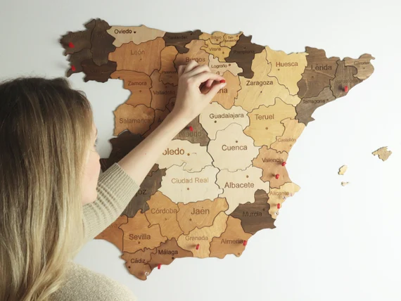
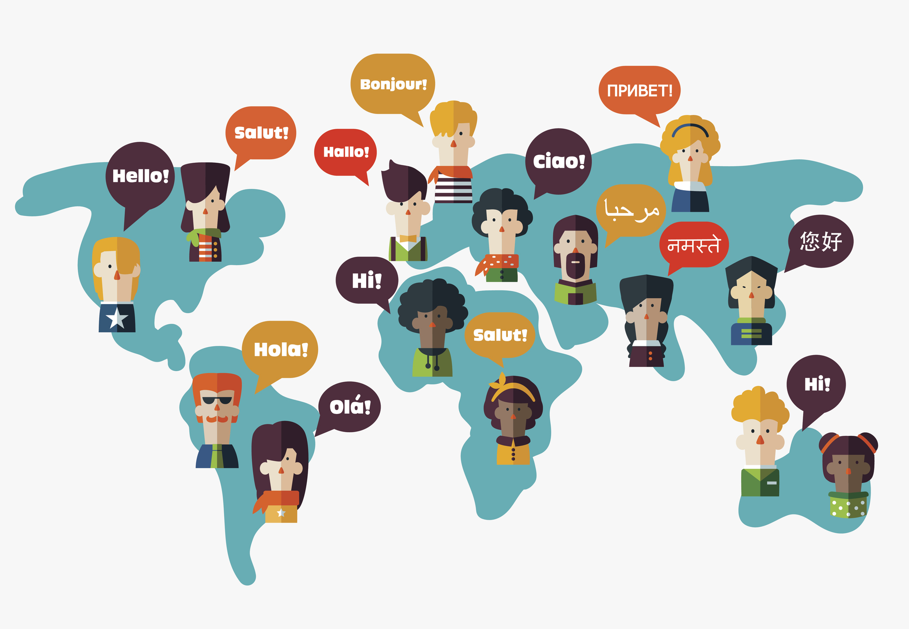
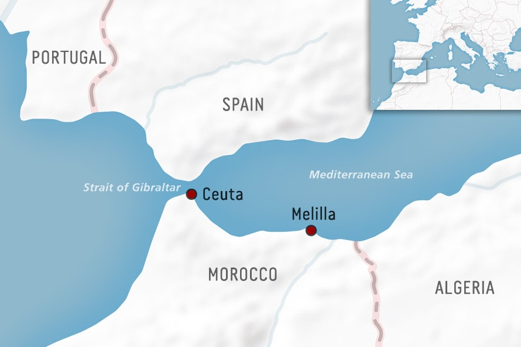
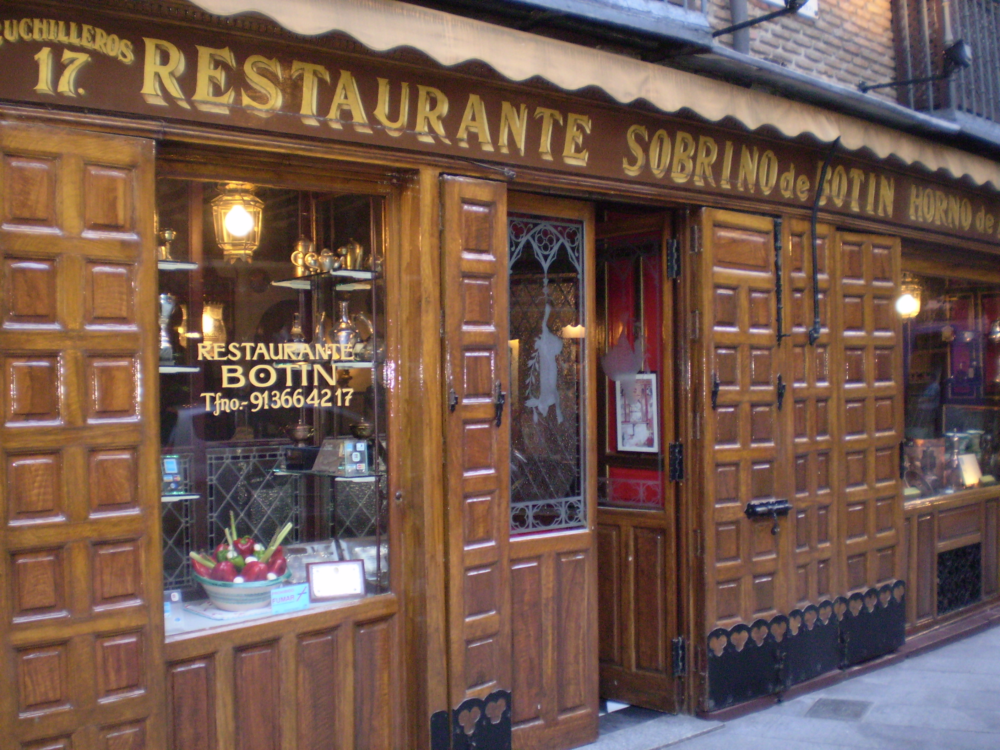
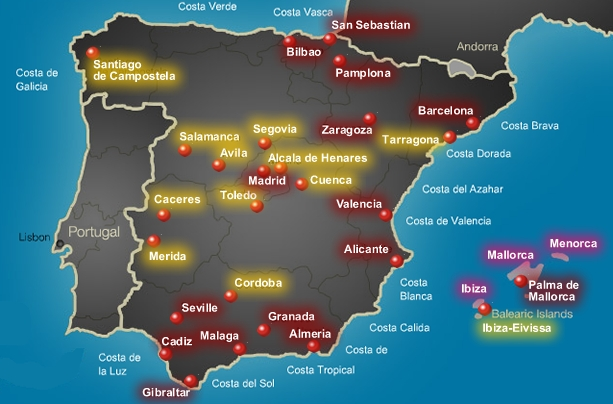
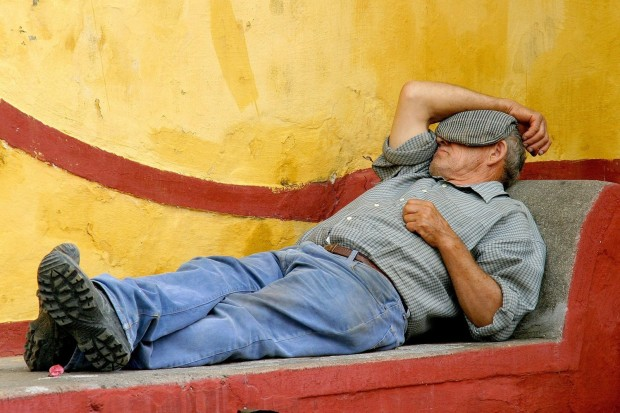
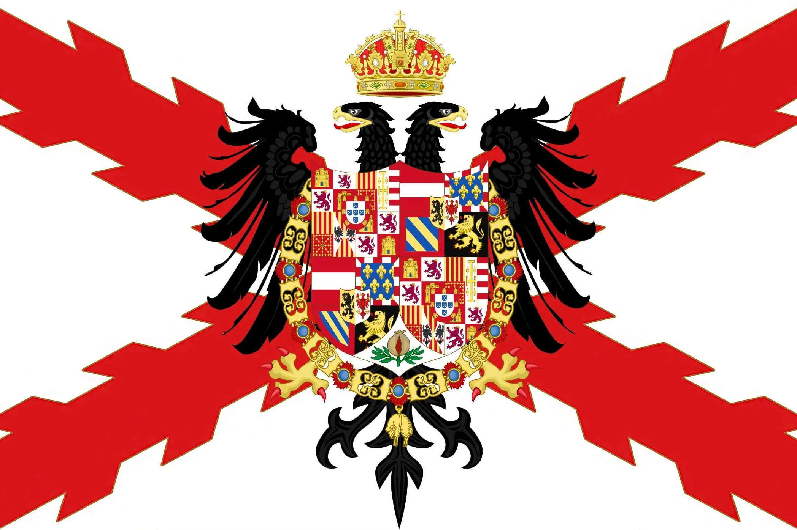
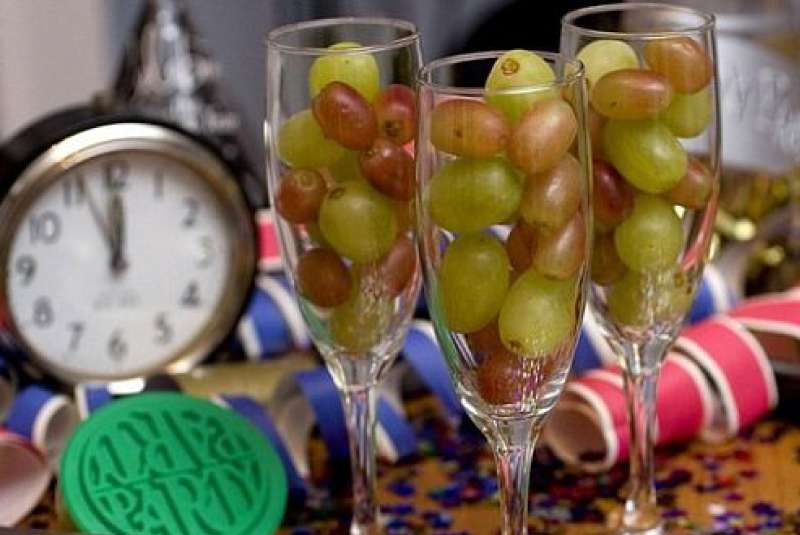

Spain is a diverse, historically rich nation on the Iberian Peninsula known for its regional languages, Mediterranean culture, and a long history that shaped much of the modern world.
Spain’s story begins with prehistoric Iberian and Celtic peoples and continues through a long classical period as Roman Hispania, whose roads, law, and cities left deep marks. After the fall of Rome the Visigothic kingdom ruled until the early 8th century, when much of the peninsula became Islamic Al-Andalus and evolved into a flourishing, multi-faith society. From the 8th to the 15th centuries the Christian Reconquista gradually retook territory, culminating in 1492 when the Iberian kingdoms were effectively unified under the Catholic Monarchs and the same year Spain launched voyages that began its global empire. The Habsburg and Bourbon dynasties then built a powerful overseas empire in the 16th–18th centuries, whose wealth and wars shaped European politics; that imperial dominance waned over the 19th century amid Napoleonic invasion and independence movements in the Americas. The 20th century brought the Spanish Civil War (1936–1939) and decades of dictatorship under Francisco Franco, followed by a peaceful transition to democracy after his death in 1975; since then Spain has become a parliamentary democracy, joined the European Union, and balanced regional identities (like Catalan, Basque, and Galician cultures) with a modern, plural society.
Quick Facts

NOT JUST SPANISH
AFRICA BORDER? YES
OLDEST RESTAURANT
44 UNESCO SITES
SIESTA IS FADING TOMATO WAR FESTIVAL
TOMATO WAR FESTIVAL

ONCE RULLED THE WORLD
NEW YEAR'S 12 GRAPESClick to flip
Title
Content goes here...